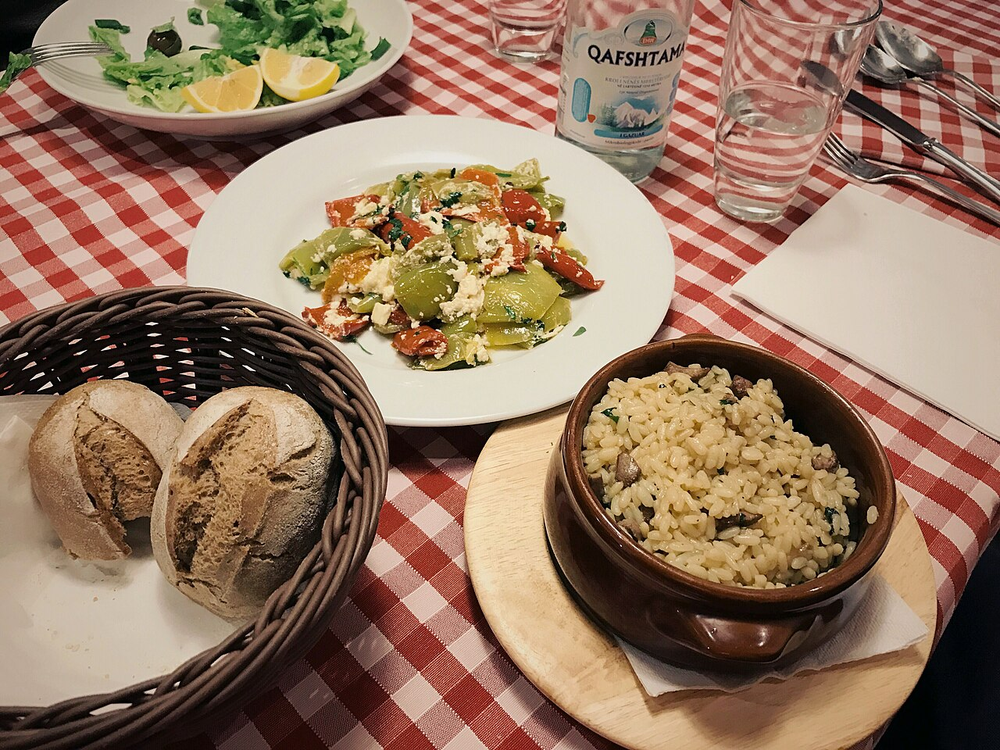
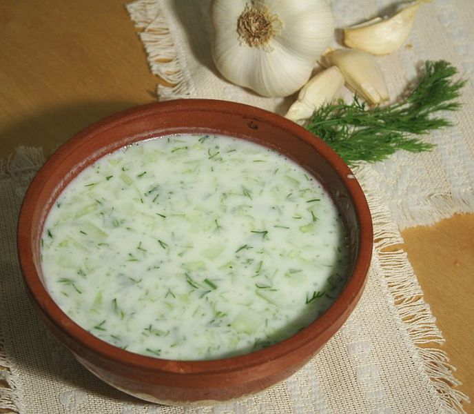
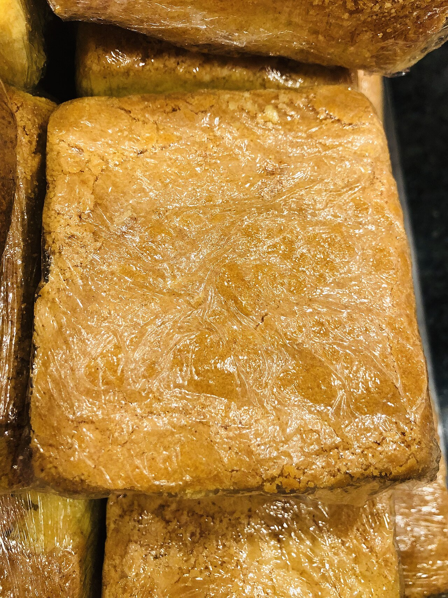

Keturių dienų žiedinė kelionė po Albaniją: pradedame ir baigiame Tiranos oro uoste. Pakeliui – Krujės pilis, Belšo ežeras, Berato senamiestis ir pilis, Osumo kanjonas, Vlorės/Radhimės pakrantė ir Karavastos–Divjakės lagūna su pelikanais. Žemiau – diena po dienos maršrutas, vairavimo info, orų prognozė, maistas, nuomos automobilio pasiūlymai ir planas B blogam orui.
1 diena · spalio 30, penktadienis
Atvykimas į Tiraną
Atskridus iš Varšuvos, pirmiausia atsiimkite bagažą ir nuomos automobilį. Iki miesto centro važiuoti apie 25–30 minučių, kelias tiesus ir naktį ramus.

Nakvynė pačiame miesto centre – prieš miegą verta trumpam nueiti iki Skanderbego aikštės, Et'hem Bėjaus mečetės ir laikrodžio bokšto, kurie vakarais gražiai apšviesti. Automobilį patogiausia palikti mokamoje aikštelėje ar viešbučio parkavimo vietoje, nes centro gatvėse laisvų vietų mažai. Iš vakaro pasitikslinkite su viešbučiu vėlyvo įsiregistravimo laiką.

2 diena · spalio 31, šeštadienis
Tirana → Krujė → Belšo ežeras → Beratas
Ryto pradžia mieste – po pusryčių keliaukite į Krujės pusę (apie 50 min), toliau tęsite į Belšo ežerą ir Beratą. Automobilį iš nakties parkavimo atsiimkite laiku, kad išvengtumėte ryto spūsčių centre.

Trumpas, bet įdomus stabtelėjimas – Krujės pilis su Skanderbego muziejumi ir senasis bazaras su vietiniais amatininkų dirbiniais. Automobilį palikite pilies papėdės aikštelėje, į pilį užlipti reikia pėsčiomis.

Kavos pertraukėlė prie Belšo ežero – ramus kraštovaizdis pusiaukelėje į Beratą. Sustojimas trumpas, toliau keliaukite be skubėjimo, kad į Beratą pataikytumėte piet metu.

Pietų pertrauka Mangalemo kvartale, netoli senamiesčio – vietinė virtuvė ir gražus vaizdas į upę bei pilies kalvą. Automobilį palikite apatinėje aikštelėje, senamiesčio gatvelės siauros ir netinkamos važiavimui.

Po pietų pasivaikščiokite po Mangalemo kvartalą ir užlipkite iki pilies – įspūdingi vaizdai į visą miestą ir upės slėnį. Automobilį geriausia palikti apačioje, senamiesčio gatvelės siauros.

Nusileiskite nuo pilies prie upės ir pereikite Goricos tiltą, jungiantį Mangalemo ir Goricos kvartalus – saulei leidžiantis apie 16:30–17:00 vaizdas į pilį ir senamiestį nuo tilto ypač gražus. Tiltas pėsčiųjų, automobilis lieka senamiesčio aikštelėje.

Grįžkite į nakvynės vietą senamiestyje – vakarienei čia pat Mangalemo ar Goricos kvartaluose daug vietinių užeigų. Kitą rytą po pusryčių keliaukite į Osumo kanjoną ir toliau per Vlorę į Llogaros perėją bei nakvynei pakrantėje.

🌧 Planas B (jei blogas oras)
Jautru orui: Krujės pilies kiemas ir senasis bazaras po atviru dangumi, Belšo ežero apžvalgos sustojimas, Berato senamiesčio/pilies vaikščiojimas ir Goricos tiltas – visa tai lietuje ar vėjyje netrauks ir gali būti slidu.
Blogo oro diena: Krujė (muziejus) → Çobo vyno ūkis → Beratas (muziejai)
🚗 Viso vairavimo: apie 178 min.
🧭 Plano B maršrutas Google Maps💡 Į Çobo vyno ūkį iš anksto paskambinkite ir susitarkite degustaciją su pietumis (+355 67 407 05 62); muziejų bilietus Krujėje ir Berate reikia pirkti grynais.
Diena baigiasi tame pačiame Berato senamiestyje, kaip ir pagrindiniame plane.
3 diena · lapkričio 1, sekmadienis
Beratas → Osumo kanjonas → Vlorė/Radhimė pakrantė
Po pusryčių išvykstame Osumo kanjono kryptimi SH72 keliu – kelionė iki apžvalgos aikštelės užtruks apie 57 min., toliau keliaukite į Vlorę/Radhimę.

Graži Osumo kanjono apžvalga tiesiai nuo SH72 kelio, netoli Berato. Automobilį palikite aikštelės prieigose, takelis į apžvalgos punktą trumpas, bet vietomis akmenuotas – avėkite patogią avalynę.

Pietūs paplūdimio restorane čia pat prie nakvynės vietos – vietiniai žuvies patiekalai su vaizdu į jūrą.

Visą popietę ir vakarą galėsite atsipalaiduoti paplūdimyje, prie pat nakvynės vietos, su nemokamu parkavimu – saulėlydis čia nuostabus. Vakarienei pasivaikščiokite palei promenadą centriniame Vlorės rajone.

🌧 Planas B (jei blogas oras)
Jautru orui: Osumo kanjono apžvalgos takas žemyn yra lauke ir slidus lietuje; popietės buvimas paplūdimyje Vlorėje/Radhimėje nejaukus ir nesaugus vėjuotu ar lietingu oru.
Blogo oro diena: Osumo kanjonas pravažiuojant → Vlorės mečetė ir dengta promenada
🚗 Viso vairavimo: apie 168 min.
🧭 Plano B maršrutas Google Maps💡 Muradie mečetė uždaroma maldos laikui apie 14:30–16:00 – būtinai apsilankykite iki 14:30.
Diena baigiasi tiek pačiame Vlorės/Radhimės pakrantės nakvynės taške, kaip ir pagrindiniame plane.
4 diena · lapkričio 2, pirmadienis
Divjakės–Karavastos lagūna → Tiranos oro uostas
Po pusryčių išvykstame į Divjakės–Karavastos nacionalinį parką pakrantės keliu (apie 1 val. 30 min).

Apžvalgos bokštas su plačiu vaizdu į Karavastos lagūną – gera vieta stebėti rausvuosius pelikanus ir kitus paukščius. Trumpas takas aplink lagūną, patogi avalynė pravers. Automobilį palikite parko aikštelėje ir čia pat pasilikite pietums.

Pietūs žuvies restorane čia pat prie parko įėjimo, prie lagūnos – vietiniai jūros gėrybių patiekalai ramioje aplinkoje.

Nuo Karavastos važiuokite į oro uostą (apie 2 val.) – kelias ramus. Su gera atsarga grąžinkite nuomos automobilį ir registruokitės skrydžiui TIA→WAW (19:05) – iki skrydžio liks apie 3 valandas, tad skubėti nereikės.

🌧 Planas B (jei blogas oras)
Jautru orui: Karavastos lagūnos apžvalgos bokštas ir pėsčiųjų takas aplink lagūną yra visiškai lauke – paukščių stebėjimas nemalonus ir prastai matomas vėjuotu ar lietingu oru.
Blogo oro diena: Bunk'Art 2 → Pazari i Ri → Et'hem Bėjaus mečetė → oro uostas
🚗 Viso vairavimo: apie 166 min.
🧭 Plano B maršrutas Google Maps💡 Et'hem Bėjaus mečetė lankytojams uždaroma nuo 14:30 iki 16:00 maldos laikui – būtinai apsilankykite iki 14:30. Automobilį palikite mokamoje aikštelėje netoli Skanderbego aikštės.
Diena baigiasi tame pačiame Tiranos oro uoste, kaip ir pagrindiniame plane.
🗺️ Žemėlapis
☁️ Orų prognozė
Žemiau pateiktas tipiškas šio laikotarpio oras šiose vietose (daugiamečiai vidurkiai) – tiksli prognozė konkrečioms dienoms atsiras maždaug 2 savaitės prieš kelionę.
1 diena · Tirana (centras)
2026-10-30 · Dažniausiai sausa
🌡 11–22°C · 🌧 0% · 💨 iki 8 km/h
2 diena · Beratas
2026-10-31 · Dažniausiai sausa
🌡 13–24°C · 🌧 20% · 💨 iki 12 km/h
3 diena · Vlorė / Radhimė
2026-11-01 · Dažniausiai sausa
🌡 13–22°C · 🌧 20% · 💨 iki 15 km/h
4 diena · Grįžimas (TIA→WAW)
2026-11-02 · Kartais lyja
🌡 12–21°C · 🌧 40% · 💨 iki 11 km/h
💰 Biudžetas (4 keliautojams)
| Kategorija | Min | Tikėtina | Maks |
|---|---|---|---|
| Skrydžiai (WAW↔TIA, 4 asm.) | 211 € | 301 € | 350 € |
| Automobilio nuoma (~3,5 d.) | 160 € | 195 € | 230 € |
| Nakvynės (3 naktys, 2 kambariai) | 216 € | 286 € | 468 € |
| Maistas (4 asm. × 4 dienos) | 235 € | 300 € | 375 € |
| Įėjimo bilietai | 15 € | 25 € | 40 € |
| Degalai (~550 km) | 74 € | 91 € | 112 € |
| Iš viso (4 keliautojai) | 911 € | 1 198 € | 1 575 € |
| Vienam asmeniui | 228 € | 300 € | 394 € |
Skrydžių kaina gali kilti artėjant datai – patikrinkite prieš užsakymą. Vlorės/Radhimės nakvynė turi didžiausią kainų skirtumą ir riziką, kad kai kurie pakrantės objektai žiemos sezonui būna uždaryti – patvirtinkite tiesiogiai. Automobilio nuomos kaina gali neapimti pilno draudimo – patikslinkite atsiėmimo metu.
🚗 Automobilio nuoma
Rekomenduojami automobilių tipai
Kompaktinis SUV
Dacia Duster, Kia Sportage, Hyundai Tucson
Geriausias pasirinkimas: pakankama prošvaisa kalvotiems keliams, pakanka vietos 4 žmonių bagažui, rudens lietui stabilesnis laikymasis kelyje nei sedanui. Pilno visureigio nereikia, nes siauri kalnų keliai į maršrutą nepatenka.
~38 €/d. apie 150 € visai kelionei
Universalas
Skoda Octavia Combi, VW Passat Variant
Jei prioritetas mažesnės degalų sąnaudos ir žemesnė kaina: didelė bagažinė, patogus lygiems kelio ruožams, bet mažesnė prošvaisa gali trukdyti kai kuriuose žvyrkeliuose.
~30 €/d. apie 120 € visai kelionei
7 vietų minivenas
Dacia Jogger, VW Caddy Maxi
Alternatyva, jei 4 žmonės vežasi daug bagažo: daugiau vietos daiktams nei kompaktiniame SUV, tačiau mažiau tinkamas kalvotiems keliams ir brangesnis degalams.
~40 €/d. apie 160 € visai kelionei
Nuomos bendrovės
Karruka Rent a Car Rinas
Kompaktinis SUV (Kia Stonic / VW T-Cross), 5 vietos
~200 € visai kelionei
Aukščiausiai vertinama nuomos bendrovė tiesiai TIA oro uoste – patikimas pasirinkimas be transportavimo, patogu atsiimant vakare po atvykimo skrydžio.
📍 Atsiėmimas: Tiranos oro uostas (TIA)
Rezervuoti →Easydrive Albania
Kompaktinis SUV (Hyundai Tucson / Kia Sportage), 5 vietos
~180 € visai kelionei
Geriausias kainos ir kokybės santykis: skaidrūs įkainiai be paslėptų mokesčių, naujas automobilių parkas, aukštas klientų vertinimas tarp visų TIA nuomotojų.
📍 Atsiėmimas: Tiranos oro uostas (TIA), veikia 24/7
Rezervuoti →Rental Cars Tirana
Kompaktinis SUV, 5 vietos
~160 € visai kelionei
Vietinė, patikima įmonė su labai geru vertinimu ir konkurencinga kaina – tinkama alternatyva, jei pirmieji du pasirinkimai neturėtų laisvo automobilio.
📍 Atsiėmimas: Tiranos oro uostas (TIA)
Rezervuoti →- Nuomos trukmė skaičiuojama nuo atsiėmimo spalio 30 d. vakare iki grąžinimo lapkričio 2 d. iki 17:00 – tai apie 3–4 paras priklausomai nuo bendrovės taisyklių; patikslinkite tiksliai rezervacijos metu.
- Reikės kredito kortelės depozitui (dažniausiai 200–500 €, blokuojama, ne nuskaitoma) – pasiimkite kortelės to paties asmens, kuris nurodytas kaip vairuotojas.
- Degalų politika dažniausiai „pilnas bakas – pilnas bakas“: prieš grąžinimą prie TIA užpildykite baką.
- Kelionė žiedinė (TIA–TIA), tad papildomo one-way mokesčio už automobilio palikimą kitame mieste neturėtų būti.
- Kadangi sutemsta apie 17:00–17:30, grąžinimą planuokite su atsarga iki 17:00 lapkričio 2 d.
- Prieš pasirašant sutartį nufotografuokite automobilio būklę – tai apsaugo nuo ginčų dėl žalos grąžinant automobilį.
🍽 Kur pavalgyti
1 diena · Tirana
qoftinė, Bloku kvartalas
~5 € / asm.
Vietinių pamėgta, nebrangi qofte vieta pačiame Bloku kvartale, vos kelios minutės pėsčiomis nuo nakvynės.
Žemėlapyje
byrek krautuvėlė, Bloku kvartalas
~2 € / asm.
Puikiai įvertinta byrek krautuvėlė su įvairiais įdarais – tinka lengvai vakarienei ar užkandai prieš miegą.
Žemėlapyje
šeimos taverna, Bloku kvartalas
~13 € / asm.
Autentiška albanų virtuvė įvairiems skoniams ir biudžetams, jei grupei norisi pilnos vakarienės.
Žemėlapyje
2 diena · Krujė ir Beratas
šeimos taverna, prie Krujės pilies
~8 € / asm.
Du brolių vedamas, ramus restoranas su vaizdu į slėnį – geras greitas užkandis ar kava.
Žemėlapyje
šeimos taverna su terasa, Berato senamiestis
~15 € / asm.
4,5/5 Tripadvisor, švieži produktai iš turgaus, vaizdas į miestą.
Žemėlapyje
šeimyninė virtuvė, Goricos kvartalas
~9 € / asm.
Mažas, vietinės šeimos valdomas restoranėlis prie Goricos tilto, greitas aptarnavimas, pigu ir skanu.
Žemėlapyje
3 diena · Radhimė ir Vlorė
žuvies taverna, Radhimė
~14 € / asm.
Šviežia, tradiciškai ruošta žuvis ir namuose keptas byrek su jūros vaizdu.
Žemėlapyje
šeimos taverna, Vlorės senamiestis
~11 € / asm.
Laikoma geriausia tradicine albanų virtuve Vlorės senamiestyje prie Muradie mečetės.
Žemėlapyje
4 diena · Divjakė / Karavasta
žuvies restoranas prie lagūnos
~13 € / asm.
Įsikūręs miške prie pat lagūnos, siūlo tiesiai iš Karavastos lagūnos sugautą žuvį ir ungurius.
Žemėlapyje
žuvies restoranas
~12 € / asm.
Šviežia žuvis ir jūros gėrybės, greitas aptarnavimas, rami aplinka – gera alternatyva.
Žemėlapyje
🍸 Barai
😋 Ką paragauti

Tavė kosi (Tavë kosi)
Albanijos nacionalinis patiekalas – ėriena, kepta su ryžiais jogurto ir kiaušinių padaže, iškeptu traškiu viršeliu.
💶 6–10 € · 📍 Restorant Mangalemi, Eni Traditional Food

Byrekas (Byrek)
Sluoksniuota tešlos pyragėlis, įdarytas sūriu, špinatais arba mėsa – kasdienis albanų užkandis, parduodamas kiekvienoje kepyklėlėje.
💶 1–2 € · 📍 Bule's Best Byrek in Town, Laberia Restaurant

Ferdžesė (Fërgesë)
Troškintos paprikos, pomidorai, svogūnai ir sūris, kepami orkaitėje – klasikinis Tiranos patiekalas, valgomas su duona.
💶 4–7 € · 📍 Restaurant Piceri Era "Blloku", Bar Restorant Alba

Qofte
Keptos maltos mėsos kukuliukai su žolelėmis, dažniausiai valgomi sumuštinyje su šviežia duona – populiarus gatvės maistas.
💶 1–3 € · 📍 Qofte Tradita Met Kodra, Restaurant Piceri Era "Blloku"

Keptos lagūnos žuvis (Peshk i pjekur)
Šviežia žuvis (dažnai lupra ar ungurys iš Karavastos lagūnos, pakrantėje – jūrinė) kepama ant žarijų su alyvuogių aliejumi ir citrina.
💶 8–16 € · 📍 Divjaka Fish Restaurant, Pelikani Restorant, Laberia Restaurant

Taratoras (Tarator)
Šaltas jogurto sriubos užkandis su agurkais, česnaku ir krapais – puikiai atgaivina po dienos kelionės.
💶 2–4 € · 📍 Old Town Sofra e Muradies, Eni Traditional Food

Revani
Drėgnas griečių (manų kruopų) pyragas, apšlakstytas cukraus sirupu – populiarus albanų desertas po pietų ar vakarienės.
💶 1–3 € · 📍 Restorant Mangalemi, Old Town Sofra e Muradies
⚠️ Praktiški patarimai
- Prie Osumo kanjono apžvalgos aikštelės (SH72 kelias) GPS programos (pvz., Google Maps) kartais siūlo trumpesnį kelią toliau į pietus per Pėrmetą -- tai NĖRA tinkamas kelias standartiniam nuomos automobiliui, nes dalis jo yra žvyrkelis. Grįžkite tuo pačiu asfaltuotu keliu atgal link Berato, o iš ten į Vlorę/Radhimę per Fierą -- tai patikrintas ir saugus maršrutas, tik šiek tiek ilgesnis.
- Osumo kanjono apžvalgos aikštelėje automobilį palikite viršuje -- žemyn į kanjoną veda tik pėsčiųjų takas, pasiimkite patogią avalynę, nes gali būti šlapia ar akmenuota.
- Berato senamiestyje Mangalemo ir Goricos kvartalus jungia pėsčiųjų tiltas -- automobilį palikite vienoje aikštelėje ir toliau judėkite pėsčiomis.
- Trumpame kelio ruože netoli Belšo ežero asfaltas duobėtas -- sumažinkite greitį, kelias vis tiek tinkamas standartiniam automobiliui.
- Karavastos lagūnos apžvalgos bokšto ir pietų vieta yra tame pačiame taške prie parko įėjimo, tad automobilio papildomai kilnoti nereikia.
- Antra kelionės diena (Tirana-Krujė-Beratas) yra ilgiausia vairavimo prasme (apie 4 val.) -- nebūtina pridėti papildomų stotelių, kad liktų laiko pasigrožėti Beratu neskubant.
- Paskutinę dieną grįžus į Tiranos oro uostą iki skrydžio liks apie 3 valandas -- automobilio grąžinimui ir registracijai laiko turėtų pakakti.
🎒 Ką pasiimti
- Rankiniam bagažui: visi skysčiai/kremai talpyklose iki 100 ml, sudėti į vieną 1 l maišelį; peiliai ir daugiafunkciai įrankiai į saloną neįleidžiami.
- Rudens Albanijoje temperatūra svyruoja nuo ~11°C ryte/vakare iki ~22–24°C dieną – rinkitės sluoksniuotą aprangą.
- 4-ą dieną (lapkričio 2 d.) didžiausia lietaus tikimybė (40%, ~7,5 mm) – lietpaltį ar skėtį laikykite po ranka Karavastos lagūnos apžvalgai.
- Kištukai ir įtampa Albanijoje tokie patys kaip Lietuvoje (Type C/F, 230V) – adapterio neprireiks.
- Kaimo vietovėse ir parkavimo aikštelėse kortelės priimamos ne visada – pasiimkite grynųjų smulkioms išlaidoms.
Dokumentai ir pinigai
Vairavimui ir automobiliui
Drabužiai
Avalynė
Higiena ir sveikata
Elektronika
Lankymuisi ir patogumui
ℹ️ Praktinė informacija
- ✈️ Skrydis į Tiraną
- Varšuva (WAW) → Tirana (TIA), atvykimas spalio 30 d., 20:30
- ✈️ Skrydis atgal
- Tirana (TIA) → Varšuva (WAW), išvykimas lapkričio 2 d., 19:05
- 🚗 Automobilio grąžinimas
- Lapkričio 2 d., iki 17:00, Tiranos oro uoste (atvykstama į TIA ~16:05)
- 🚨 Pagalbos numeris Albanijoje
- 112 (bendrasis pagalbos numeris)